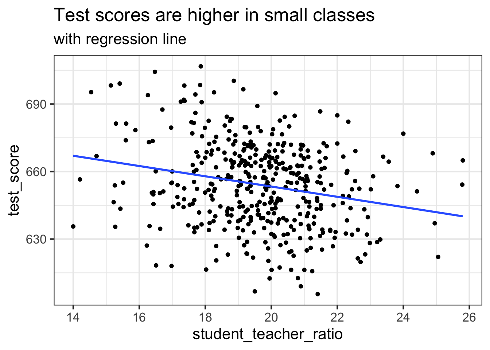
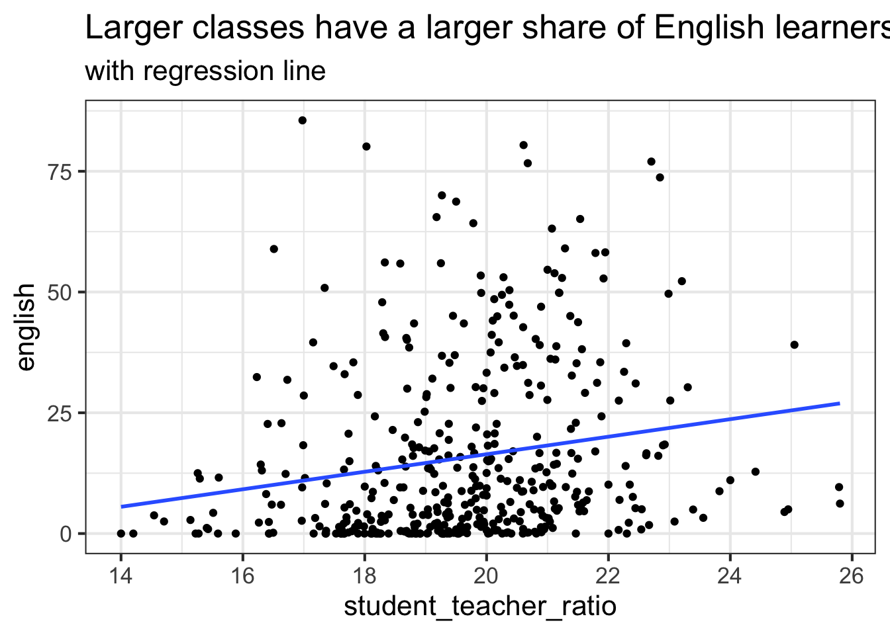

8 More on linear regression
We had a quick look at the lm() function and linear regressions in R. We
will deepen our knowledge by having another look at these models. This time,
we put more emphasis on the econometric side of the problem.
The following relies heavily on a new a new online book, Econometrics in R. This chapter covers the content of chapters 4 to 7. Contrary to the textbook, we will rely on the tools of the tidyverse, to unfiy the data analysis. We will not cover most of the statistical topics in the book. The interested reader is refered to the book, or to the underlying Econometrics textbook, Introduction to Econometrics (which is not free).
8.0.1 Relationship between class size and test score
The book takes a careful look on the impact of class sizes on school test scores. If, for example, a school cuts its class sizes by hiring new teachers, that is, the school lowers the student-teacher ratios of its classes, how would this affect the performance of the students involved in a standardized test? With linear regression we can not only examine whether the student-teacher ratio does have an impact on the test results but we can also learn about the direction and the strength of this effect.
The dataset is included in the AER package and can be loaded as follows:
## Loading required package: car## Loading required package: carData##
## Attaching package: 'car'## The following object is masked from 'package:boot':
##
## logit## The following object is masked from 'package:dplyr':
##
## recode## The following object is masked from 'package:purrr':
##
## some## Loading required package: lmtest## Loading required package: zoo##
## Attaching package: 'zoo'## The following objects are masked from 'package:base':
##
## as.Date, as.Date.numeric## Loading required package: sandwich## Loading required package: survival##
## Attaching package: 'survival'## The following object is masked from 'package:boot':
##
## amlThe dataset contains data on test performance, school characteristics and
student demographic backgrounds for school districts in California. We will
enhance the dataset by defining two new variables, student_teacher_ratio,
the student-teacher ratio, and test_score, an average of two underlying
test scores:
library(tidyverse)
caschools <-
CASchools %>%
as_tibble() %>%
mutate(student_teacher_ratio = students / teachers) %>%
mutate(test_score = (read + math) / 2)
caschools## # A tibble: 420 x 16
## district school county grades students teachers calworks lunch computer
## <chr> <chr> <fct> <fct> <dbl> <dbl> <dbl> <dbl> <dbl>
## 1 75119 Sunol… Alame… KK-08 195 10.9 0.510 2.04 67
## 2 61499 Manza… Butte KK-08 240 11.1 15.4 47.9 101
## 3 61549 Therm… Butte KK-08 1550 82.9 55.0 76.3 169
## 4 61457 Golde… Butte KK-08 243 14 36.5 77.0 85
## 5 61523 Paler… Butte KK-08 1335 71.5 33.1 78.4 171
## 6 62042 Burre… Fresno KK-08 137 6.40 12.3 87.0 25
## 7 68536 Holt … San J… KK-08 195 10 12.9 94.6 28
## 8 63834 Vinel… Kern KK-08 888 42.5 18.8 100 66
## 9 62331 Orang… Fresno KK-08 379 19 32.2 93.1 35
## 10 67306 Del P… Sacra… KK-06 2247 108 79.0 87.3 0
## # … with 410 more rows, and 7 more variables: expenditure <dbl>, income <dbl>,
## # english <dbl>, read <dbl>, math <dbl>, student_teacher_ratio <dbl>,
## # test_score <dbl>It is always a good idea to start with a plot. Let us refresh our knowledge of ggplot:
caschools %>%
ggplot(aes(x = student_teacher_ratio, y = test_score)) +
geom_point() +
ggtitle("Test scores are higher in small classes")The plot shows the scatterplot of all observations on the student-teacher ratio and test score. We see that the points are strongly scattered, and that the variables are negatively correlated. That is, we expect to observe lower test scores in bigger classes.
Let’s use lm() to estimate a linear regression model:
##
## Call:
## lm(formula = test_score ~ student_teacher_ratio, data = caschools)
##
## Residuals:
## Min 1Q Median 3Q Max
## -47.727 -14.251 0.483 12.822 48.540
##
## Coefficients:
## Estimate Std. Error t value Pr(>|t|)
## (Intercept) 698.9329 9.4675 73.825 < 2e-16 ***
## student_teacher_ratio -2.2798 0.4798 -4.751 2.78e-06 ***
## ---
## Signif. codes: 0 '***' 0.001 '**' 0.01 '*' 0.05 '.' 0.1 ' ' 1
##
## Residual standard error: 18.58 on 418 degrees of freedom
## Multiple R-squared: 0.05124, Adjusted R-squared: 0.04897
## F-statistic: 22.58 on 1 and 418 DF, p-value: 2.783e-06Thus, the coefficient on the student_teacher_ratio is about -2.3, i.e., a
reduced class size by one is associated with a test score increased by 2.3.
geom_smooth() allows us to plot a bivariate regression line directly into a
ggplot:
caschools %>%
ggplot(aes(x = student_teacher_ratio, y = test_score)) +
geom_point() +
geom_smooth(method = "lm", se = FALSE) +
ggtitle("Test scores are higher in small classes", "with regression line")
8.0.2 Heteroskedasticity-consistent standard errors
In economic contexts, some of the assumptions of the classical regression model are usually violated, and it recommended and sometimes required to use robust standard errors. The textbook discusses the case of heteroskedasticity-consistent standard errors.
The quickest way to compute heteroskedasticity-consistent standard errors is
to use robust_lm, from the
estimatr
package.
library(estimatr)
m_robust <- lm_robust(
test_score ~ student_teacher_ratio,
se_type = "HC1",
data = caschools
)
summary(m_robust)##
## Call:
## lm_robust(formula = test_score ~ student_teacher_ratio, data = caschools,
## se_type = "HC1")
##
## Standard error type: HC1
##
## Coefficients:
## Estimate Std. Error t value Pr(>|t|) CI Lower CI Upper
## (Intercept) 698.93 10.3644 67.436 9.487e-227 678.560 719.306
## student_teacher_ratio -2.28 0.5195 -4.389 1.447e-05 -3.301 -1.259
## DF
## (Intercept) 418
## student_teacher_ratio 418
##
## Multiple R-squared: 0.05124 , Adjusted R-squared: 0.04897
## F-statistic: 19.26 on 1 and 418 DF, p-value: 1.447e-05We can use htmlreg (or screenreg, for interactive use; or texreg)
from above to get a clean overview of the two estimations
(include.ci = FALSE is needed for a peculiarity of lm_robust):
htmlreg(
list(
`OLS s.e.` = m,
`heteroskedasticity-consistent s.e.` = m_robust
),
include.ci = FALSE,
star.symbol = "\\*",
doctype = FALSE,
caption = "Robust standard errors are slightly wider."
)| OLS s.e. | heteroskedasticity-consistent s.e. | ||
|---|---|---|---|
| (Intercept) | 698.93*** | 698.93*** | |
| (9.47) | (10.36) | ||
| student_teacher_ratio | -2.28*** | -2.28*** | |
| (0.48) | (0.52) | ||
| R2 | 0.05 | 0.05 | |
| Adj. R2 | 0.05 | 0.05 | |
| Num. obs. | 420 | 420 | |
| RMSE | 18.58 | 18.58 | |
| ***p < 0.001, **p < 0.01, *p < 0.05 | |||
Robust standard errors are often wider, making it less likely that an effect is statistically significant. Whenever possible, use heteroskedasticity-consistent standard errors.
8.0.3 Omitted variable bias
The previous analysis of the relationship between test score and class size has a major flaw: we ignored other determinants of the dependent variable (test score) that correlate with the regressor (class size). This might induce an estimation bias. In our example we therefore wrongly estimate the causal effect on test scores of a unit change in the student-teacher ratio, on average. This issue is called omitted variable bias (OVB).
Let’s have a look at the following relationship between the percentage of
English learners (english) and class size:
caschools %>%
ggplot(aes(x = student_teacher_ratio, y = english)) +
geom_point() +
geom_smooth(method = "lm", se = FALSE) +
ggtitle(
"Larger classes have a larger share of English learners ",
"with regression line"
)
Since a high share of English learners is likely to have lowering impact on test scores, this suggests that the effect of small classes is overestimated as it captures the effect of having fewer English learners, too.
Multiple regression allows us to disentangle the two effects:
m_multiple <- lm_robust(test_score ~ student_teacher_ratio + english, se_type = "HC1", data = caschools)
summary(m_robust)##
## Call:
## lm_robust(formula = test_score ~ student_teacher_ratio, data = caschools,
## se_type = "HC1")
##
## Standard error type: HC1
##
## Coefficients:
## Estimate Std. Error t value Pr(>|t|) CI Lower CI Upper
## (Intercept) 698.93 10.3644 67.436 9.487e-227 678.560 719.306
## student_teacher_ratio -2.28 0.5195 -4.389 1.447e-05 -3.301 -1.259
## DF
## (Intercept) 418
## student_teacher_ratio 418
##
## Multiple R-squared: 0.05124 , Adjusted R-squared: 0.04897
## F-statistic: 19.26 on 1 and 418 DF, p-value: 1.447e-05htmlreg(
list(
m_robust,
m_multiple
),
include.ci = FALSE,
star.symbol = "\\*",
doctype = FALSE,
caption = "Including the share of English learners decreases the coefficient on class size."
)| Model 1 | Model 2 | ||
|---|---|---|---|
| (Intercept) | 698.93*** | 686.03*** | |
| (10.36) | (8.73) | ||
| student_teacher_ratio | -2.28*** | -1.10* | |
| (0.52) | (0.43) | ||
| english | -0.65*** | ||
| (0.03) | |||
| R2 | 0.05 | 0.43 | |
| Adj. R2 | 0.05 | 0.42 | |
| Num. obs. | 420 | 420 | |
| RMSE | 18.58 | 14.46 | |
| ***p < 0.001, **p < 0.01, *p < 0.05 | |||
We find that the negative coefficient on student_teacher_ratio is still
significant but only half the size.
8.1 Exercises
For this exercise, you will work with Boston, which is part of the MASS package.
Load the MASS package, check the documentation to get an overview of the variables in
Boston.Convert
Bostonfrom a data frame to a tibble, calledboston.Plot a scatter-plot between the percent of households with low socioeconomic status,
lstat, (x-axis) and the median house value of districtsmedv, (y-axis). Describe your observations. How appropriate is the assumption of linearity?Estimate a simple linear regression model that explains
medvbylstatand a constant. Save the model tom_uni. Use heteroskedasticity-consistent standard errors.Regress the median housing value in a district,
medv, on the average age of the buildings,age, the per-capita crime rate,crim, the percentage of individuals with low socioeconomic status,lstat, and a constant. Store it asm_multi.Regress
medvon all available regressors. Use the formulamedv ~ .as a short cut. Store the model asm_full.Use
htmlreg()(orscreereg(), ortexreg()to produce a regression output that is ready for publication. Includem_uni,m_multiandm_full. Check whether the augmented model yields a higher adjusted R2. Why is not meaningful to compare the unadjusted R2?Can we improve the model (in terms of adjusted R2), by dropping a variable? Hint: the
glancefunction makes it easy to directly access the adjusted R2.